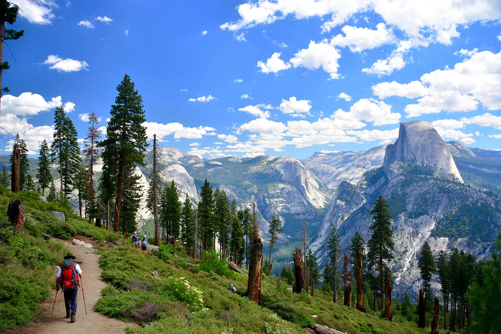
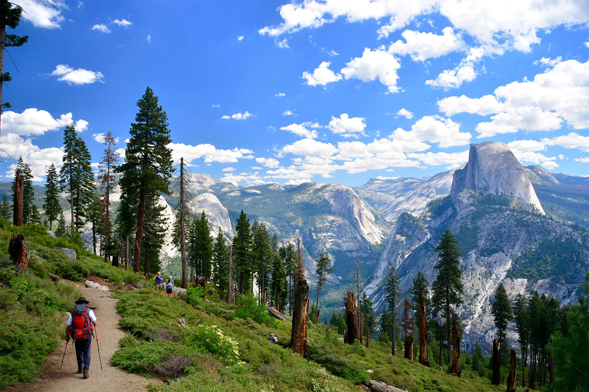

Personal Background
This is Mario Ortiz – a hiking enthusiast who’s always looking for the next great national park to explore. Yosemite has a special place in his heart, and it’s a spot he’s always eager to visit. Born in Mexico and arriving in the U.S. at just 14 days old, Mario’s journey has been one of adventure and discovery.
Interests and Hobbies
One of Mario’s favorite shows is Severance. He’s hooked on its intriguing plot and unique twists. Check out the intro below!
Mario's favorite hiking spot is Whitney Canyon Park, he enjoys playing tennis, and he’s passionate about traveling to Yosemite.

 

Fun Extras
If Mario could have any superpower, he’d choose time travel so he could go back to the 90s and make some savvy stock market investments!


Skills and Experience
With a knack for graphic design, Mario is an expert in Adobe Illustrator and loves bringing ideas to life with the help of ChatGPT. Next on his list? Mastering Java.